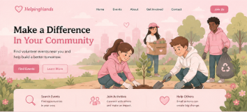
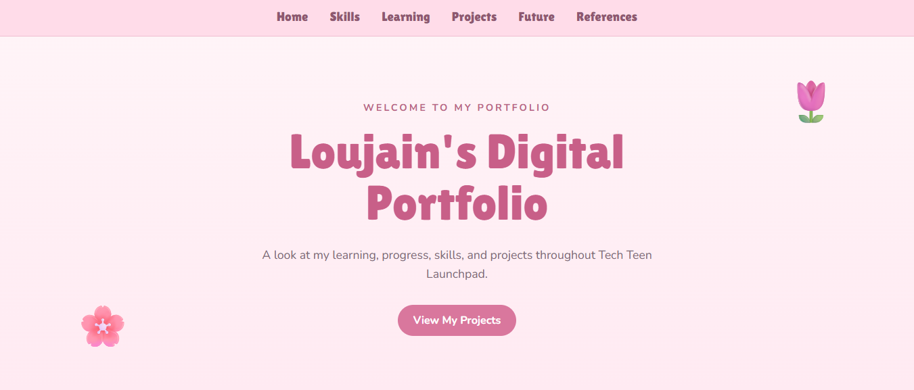

Volunteer Event Finder

A group website designed to help students find volunteer opportunities in New York City and Long Island.
Tools: HTML, CSS & JavaScript
JavaScript navigation support was developed with AI assistance. [AI-1]
My Tech Teen Launchpad Learning Journey 💗
Technologies and tools I practiced during the program.
Topics that stood out to me during Tech Teen Launchpad.
Write your own reflection here.
How my technical skills changed throughout the program.
Write your own progress story here.
HTML
CSS
JavaScript
Python
Projects and activities I developed during my technical learning journey.
Volunteer Event Finder

A group website designed to help students find volunteer opportunities in New York City and Long Island.
Tools: HTML, CSS & JavaScript
JavaScript navigation support was developed with AI assistance. [AI-1]
Python Activities

Python activities completed during Teen Tech Launchpad to practice variables, loops, lists, and other programming concepts.
Tools: Python
Digital Portfolio

My personal digital portfolio, created from the class portfolio template and personalized with my own colors, layout, projects, and content.
Tools: HTML, CSS, GitHub
AI was used for coding feedback and debugging assistance while updating the portfolio. [AI-2]
How my experience in this course connects with my future goals.
Write your own future endeavors reflection here.